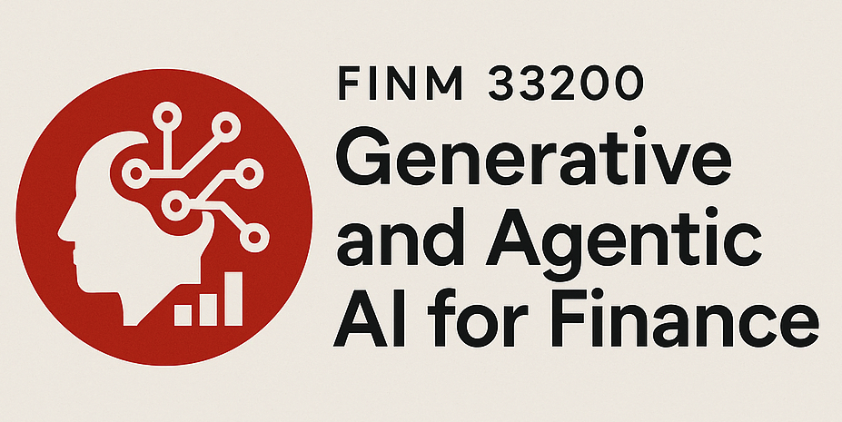

Skip to main content
Back to top
Ctrl
+
K

Generative and Agentic AI for Finance
Course Syllabus: FINM 33200, Spring 2026
Course Overview
Discussions 📖
Discussion 1: The New Quant - LLMs in Finance
LLMs Transforming Finance: The New Quant
LLMs for Return Prediction: Prompts vs. Embeddings
ChartBook: Cataloging Research for Humans and AI
API Basics and Structured Outputs
Study Questions
Discussion 2: Text Representation and Tokenization
The Structure of Economic News
AI Copilots: History and Tools
From Words to Tokens
Optional extra: News, Financial Crises, and the Geometry of Meaning
Study Questions
Discussion 3: LLM Fundamentals
AI Roundup: Week 3
LLMs and Lookahead Bias
The Mathematics of microGPT
The OpenAI API Platform
OpenAI API Overview
Study Questions
Discussion 4: Benchmarking and LLM Tool Use
From Chain-Of-Thought To Tool Use
Benchmarking LLMs
Retrieval-Augmented Generation (RAG)
01. Semantic Search of SEC Filings
02. RAG Benchmark: Can Retrieved Context Fix a Weak Model?
WARNING: Notes subject to change after this week
Discussion 5: Agents
Introduction to Agents
Homework 📝
Homework 0: Set Up Your Environment
Data Sources & Strategy
GDELT Filtering & Data Quality
Crosswalk Quality
Homework 1: Lopez-Lira, Tang (2023)
Data Sources Overview
NLP Pipeline & Portfolio Construction
Replication Results
Homework 2: Chen, Kelly, Xiu (2022)
Data Explorer
Text Embeddings: From Words to Vectors
Methodology: From Embeddings to Predictions
Replication Results: Chen, Kelly, and Xiu (2022)
Homework 3: Benchmarking & RAG
01. Benchmark Questions
02. LLM Benchmark Analysis
03. Building Agents: From Simple Prompting to Tool-Using Agents
Final Project
Final Project Instructions
Potential Final Project Ideas
Exams 📋
Exam Preparation
Misc 📌
Acknowledgments
Appendix
The Mathematics of Karpathy’s nanochat
Repository
Open issue
Index